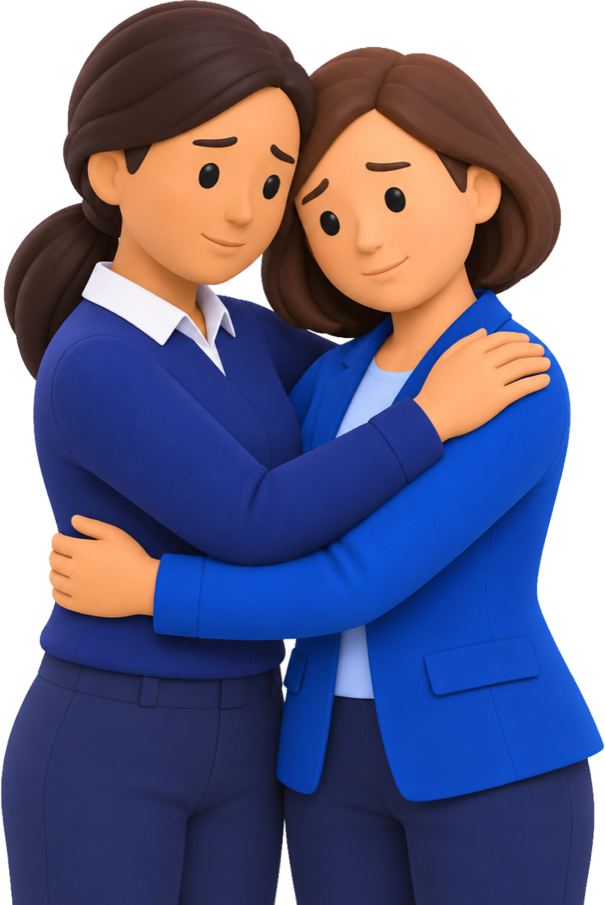
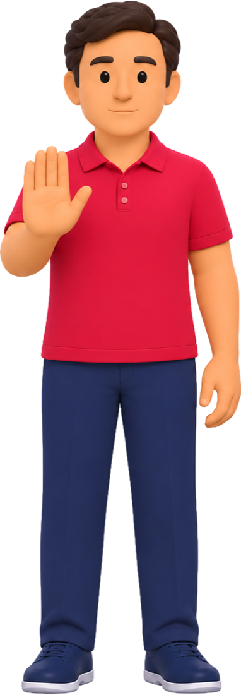
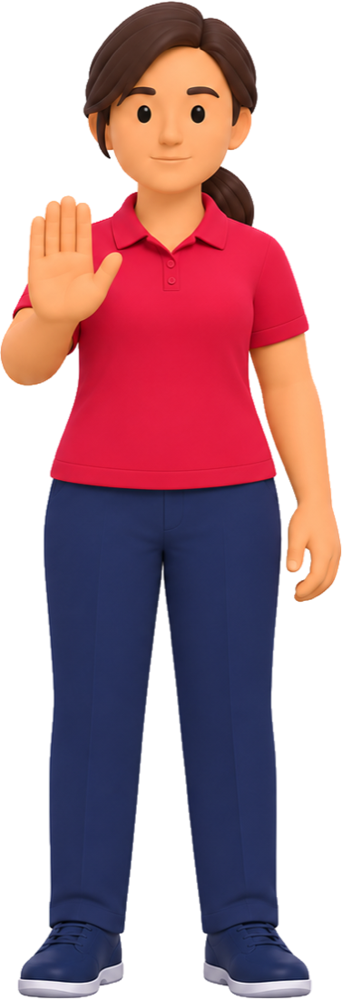
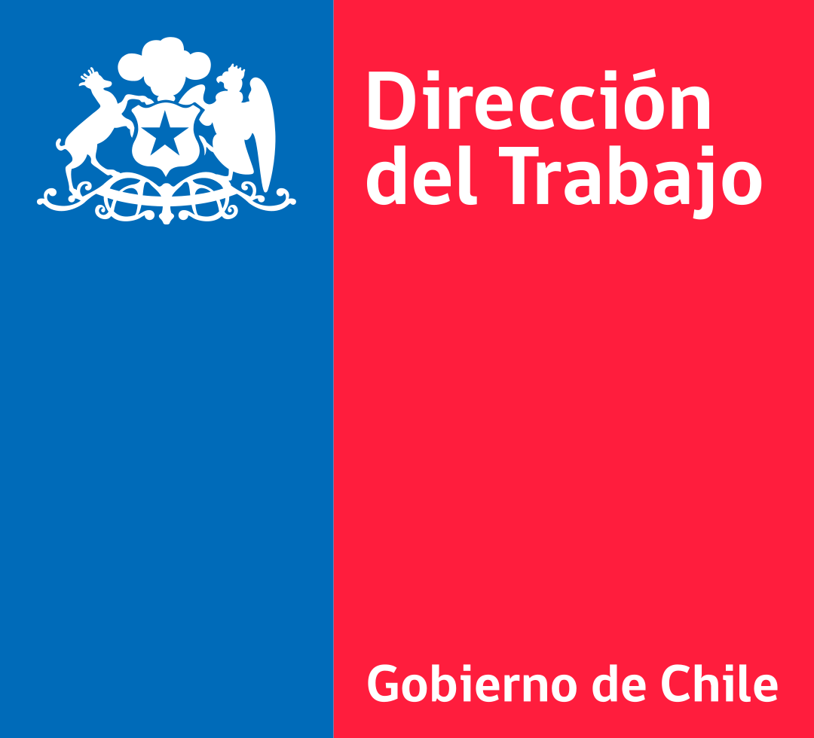
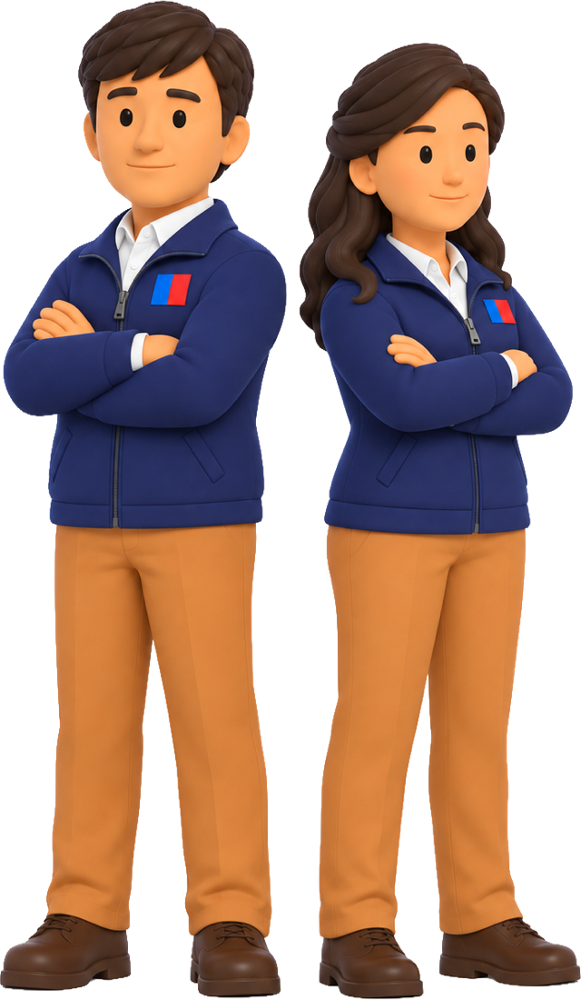

Art. 211-D: mediar sería sentar a la víctima a negociar con quien la acosó.
Confirmar, corregir o descartar. Un descarte exige motivo, cita y la firma de un supervisor.
Cada una con su prueba. Lo que no admite interpretación no se le pregunta al modelo.
Si queda un dato personal en el relato, el flujo se corta y el caso no sale.
Salida validada y la ley citada al pie de la letra, en un prefijo cacheado.